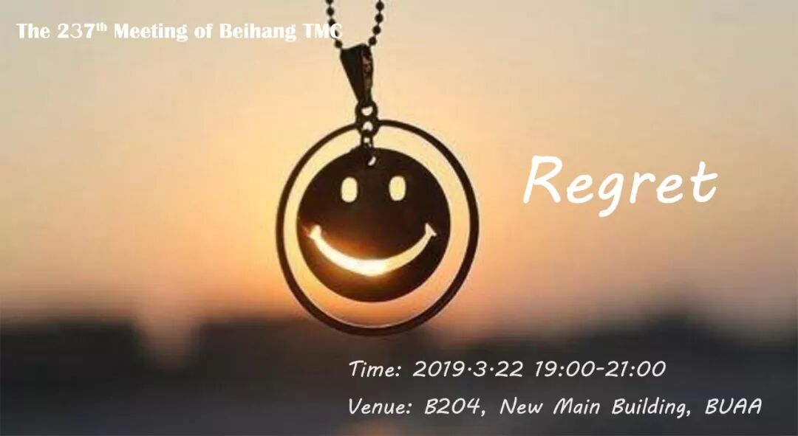

REGRET
遗憾
所谓遗憾，是想去做一些事情，也付诸行动，但结局并不是你想要的那种美好
选择遗憾，就是选择豁达
尽管结果不如意，但你已经尽力去做，其他因素，你无法改变
那就接受这个事实
生命地长河中，泛起一朵水花
你会重新开启下一段旅途
选择后悔，就是选择否定
早知如此，就不这么做了
你否定了那一段苦旅的意义
生命长河中，你筑起了一道堤坝
以后，再碰到你向往的未来
犹豫，担忧，否定自己
像一只担惊受怕的鹿
没有遗憾，生命也就没有了颜色
有了遗憾，生命便会张扬起来
希望你继续勇敢的追，不畏遗憾
——guapi
会议时间：3月2日（本周五）19：00-21：00
会议地点：北航新主楼B204教室


北航头马
与你一起分享遗憾
编辑|Chen
海报|Chen
文案|Chen
原文链接（公众号关闭后可能失效）：
https://mp.weixin.qq.com/s/HBCZ85s1zF9YsxIARtorOg
https://mp.weixin.qq.com/s/HBCZ85s1zF9YsxIARtorOg
第 514/539 篇 · 北航Toastmasters英文演讲俱乐部公众号存档
本页为抢救式本地归档，图文已永久保存。
本页为抢救式本地归档，图文已永久保存。